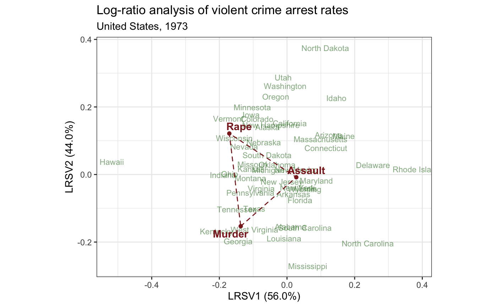

geom-biplot-polygon.Rdgeom_*_polygon() renders polygons around the convex hulls of
the positions of the subjects or vectors.
geom_rows_polygon( mapping = NULL, data = NULL, stat = "identity", position = "identity", ..., na.rm = FALSE, show.legend = NA, inherit.aes = TRUE ) geom_cols_polygon( mapping = NULL, data = NULL, stat = "identity", position = "identity", ..., na.rm = FALSE, show.legend = NA, inherit.aes = TRUE ) geom_dims_polygon( mapping = NULL, data = NULL, stat = "identity", position = "identity", .matrix = "rows", ..., na.rm = FALSE, show.legend = NA, inherit.aes = TRUE )
| mapping | Set of aesthetic mappings created by |
|---|---|
| data | The data to be displayed in this layer. There are three options: If A A |
| stat | The statistical transformation to use on the data for this layer, as a string. |
| position | Position adjustment, either as a string, or the result of a call to a position adjustment function. |
| ... | Additional arguments passed to |
| na.rm | Passed to |
| show.legend | logical. Should this layer be included in the legends?
|
| inherit.aes | If |
| .matrix | A character string matching one of several indicators for one
or both matrices in a matrix decomposition used for ordination. The
standard values are |
ggbiplot() uses ggplot2::fortify() internally to produce a single data
frame with a .matrix column distinguishing the subjects ("rows") and
variables ("cols"). The stat layers stat_rows() and stat_cols() simply
filter the data frame to one of these two.
The geom layers geom_rows_*() and geom_cols_*() call the corresponding
stat in order to render plot elements for the corresponding factor matrix.
geom_dims_*() selects a default matrix based on common practice, e.g.
points for rows and arrows for columns.
geom_*_polygon() understands the following aesthetics (required aesthetics
are in bold):
x
y
alpha
colour
fill
linetype
size
group
# state abbreviations state <- data.frame( .name = state.name, .abb = state.abb ) # Log-ratio analysis of 1973 violent crime arrests in the United States USArrests %>% subset(select = -UrbanPop) %>% lra() %>% print() -> arrests_lra#> $sv #> [1] 0.11758785 0.06383505 #> #> $row.coords #> LRSV1 LRSV2 #> Alabama -0.68001198 0.929601139 #> Alaska 0.92998988 -0.624577164 #> Arizona -0.32984955 -1.311581695 #> Arkansas -0.35134428 0.277323143 #> California 0.55165901 -1.004280086 #> Colorado 1.22910659 -0.638846890 #> Connecticut -0.43610804 -1.027017532 #> Delaware -1.54269183 -1.349322890 #> Florida -0.54682514 0.300298438 #> Georgia 0.15812112 1.916932033 #> Hawaii 3.51365819 2.150284964 #> Idaho -0.05250833 -2.109188891 #> Illinois -0.52429773 0.002652531 #> Indiana 1.22231804 0.881075829 #> Iowa 1.39095549 -0.632985189 #> Kansas 0.75715595 0.380674137 #> Kentucky 0.68864901 2.024832534 #> Louisiana -0.69015525 1.238509473 #> Maine -0.63716612 -1.499305459 #> Maryland -0.63629812 -0.286175559 #> Massachusetts -0.22762978 -1.124006923 #> Michigan 0.41414730 0.171745261 #> Minnesota 1.45222388 -0.789191960 #> Mississippi -1.47068651 1.436924829 #> Missouri 0.78566710 0.278289912 #> Montana 0.65946921 0.566956397 #> Nebraska 0.82281297 -0.284750183 #> Nevada 1.14994121 0.060475841 #> New Hampshire 0.88778358 -0.710870888 #> New Jersey 0.01717089 0.205735676 #> New Mexico -0.12336523 -0.223126918 #> New York -0.35365080 0.100656157 #> North Carolina -2.35659680 0.189728037 #> North Dakota 0.74912231 -2.900272794 #> Ohio 1.11076020 0.766013515 #> Oklahoma 0.30637650 -0.053491161 #> Oregon 1.13217636 -1.312593507 #> Pennsylvania 0.48983869 0.840580871 #> Rhode Island -2.42442178 -1.868251942 #> South Carolina -0.96800438 0.752042083 #> South Dakota 0.61067278 -0.091684230 #> Tennessee 0.55166149 1.334277800 #> Texas 0.22895595 1.088292623 #> Utah 1.20949943 -1.771844197 #> Vermont 1.78310111 -0.254863377 #> Virginia 0.33180838 0.612645656 #> Washington 1.07067103 -1.635935144 #> West Virginia -0.02043499 1.475198849 #> Wisconsin 1.43728882 0.033416687 #> Wyoming -0.50955934 0.033243165 #> #> $column.coords #> LRSV1 LRSV2 #> Murder 0.283086 4.9570302 #> Assault -0.370595 -0.1805698 #> Rape 2.876702 -0.3660163 #> #> attr(,"class") #> [1] "lra"arrests_lra %>% as_tbl_ord() %>% augment() %>% left_join_rows(state, by = ".name") %>% print() -> arrests_lra#> # A tbl_ord of class 'lra': (50 x 2) x (3 x 2)' #> # 2 coordinates: LRSV1 and LRSV2 #> # #> # Rows: [ 50 x 2 | 2 ] #> LRSV1 LRSV2 | .name .abb #> | <chr> <chr> #> 1 -0.680 0.930 | 1 Alabama AL #> 2 0.930 -0.625 | 2 Alaska AK #> 3 -0.330 -1.31 | 3 Arizona AZ #> 4 -0.351 0.277 | 4 Arkansas AR #> 5 0.552 -1.00 | 5 California CA #> # … with 45 more rows #> # #> # Columns: [ 3 x 2 | 1 ] #> LRSV1 LRSV2 | .name #> | <chr> #> 1 0.283 4.96 | 1 Murder #> 2 -0.371 -0.181 | 2 Assault #> 3 2.88 -0.366 | 3 Rape# Adapt Exhibit 7.1 in Greenacre (2010) arrests_lra %>% confer_inertia(1) %>% ggbiplot(sec.axes = "cols", scale.factor = 1/20) + theme_bw() + geom_rows_text( aes(label = .abb), size = 3, color = "darkgreen", alpha = .5 ) + geom_cols_polygon(fill = NA, linetype = "dashed", color = "brown4") + geom_cols_text( aes(label = .name), color = "brown4", fontface = "bold" ) + ggtitle( "Log-ratio analysis of violent crime arrest rates", "United States, 1973" ) + guides(color = FALSE, size = FALSE)